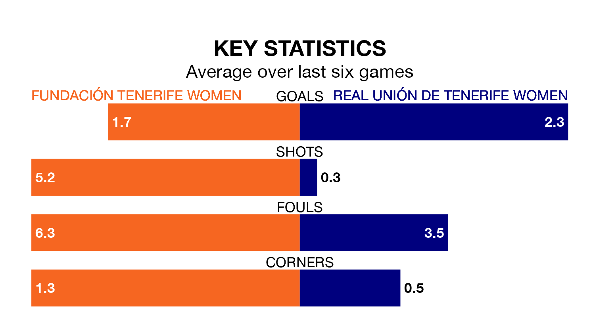

Real Unión de Tenerife Women visit Fundación Tenerife Women on early Saturday on the back of six consecutive wins in Segunda Federación Femenina.
It means Unión de Tenerife Women have picked up the maximum 18 points from their last six games, and they face a Fundación Tenerife side who have also won their last three matches, and collected 14 points from the last possible 18.
With 27 goals in 17 games so far this season, Unión de Tenerife Women are scoring more than average in the league with 1.6 goals per game. And they are conceding fewer than average, letting in 15 goals at a rate of 0.9 per game.
Fundación Tenerife are also above average scorers, with 1.5 goals per game, compared to a league average of 1.3. They have conceded 0.8 goals per game.
The visitors are fifth in the table after 17 games, of which they have won 10 and drawn four, earning 34 points.
The home team are two places behind Unión de Tenerife Women in seventh, with 10 wins and two draws putting them on 32 points.
Fundación Tenerife's last match was on January 20, a 3-0 win against Levante II Women, with getting the goals for Fundación Tenerife.
Unión de Tenerife Women beat Elche Women 2-1 last time out, on Sunday, with on the scoresheet.
Updated: 09:18 (UTC), 23/01/24